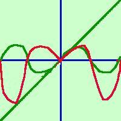

|
Disegnare approssimativamente il grafico per la funzione: y = x sen x Il campo di esistenza e' tutto l'asse reale: C.E. {x Scompongo la funzione: posso considerarla prodotto di due funzioni  La prima:
y =
x e' la
bisettrice del primo e terzo quadrante La prima:
y =
x e' la
bisettrice del primo e terzo quadrante La seconda:
y = sen x
La seconda:
y = sen xe' la sinusoide Ora  la mia funzione di partenza sara' il prodotto delle funzioni parziali: y = x·sen x cioe' bastera' che punto per punto intuitivamente io faccia il prodotto dei valori che hanno le ordinate delle due funzioni parziali. In verde le due funzioni componenti. In rosso la loro funzione prodotto. si potrebbe anche dire che la funzione y = x sen x e' una funzione pari perche' e' il prodotto di due funzioni dispari (meno per meno da' piu') sapresti dimostrare che il prodotto di due funzioni dispari e' una funzione pari? |